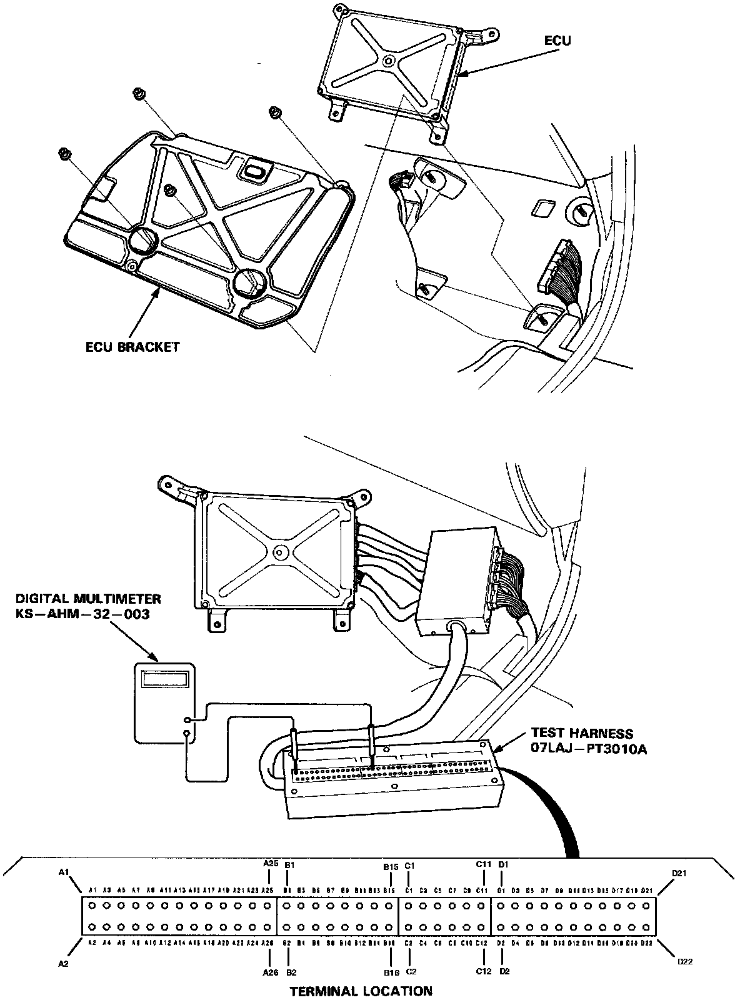
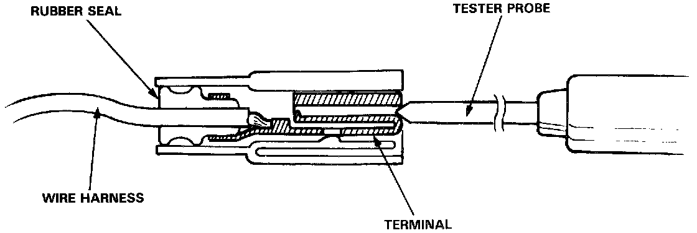

Engine Control Module: Testing and Inspection

Test Harness Use
If the inspection for a particular failure code requires the test harness, remove the right door sill molding and the small cover on the right kick panel and pull the carpet hack to expose the ECU. Unbolt the ECU bracket. Then disconnect the connector from the cooling fan control unit and connect the test harness. Then check the system according to the procedure described for the appropriate code(s).

CAUTION:
- Puncturing the insulation on a wire can cause poor or intermittent electrical connections.
- For testing at connectors other than the test harness, bring the tester probe into contact with the terminal from the connector side of wire harness connectors in the engine compartment. For female connectors, just touch lightly with the tester probe and do not insert the probe.